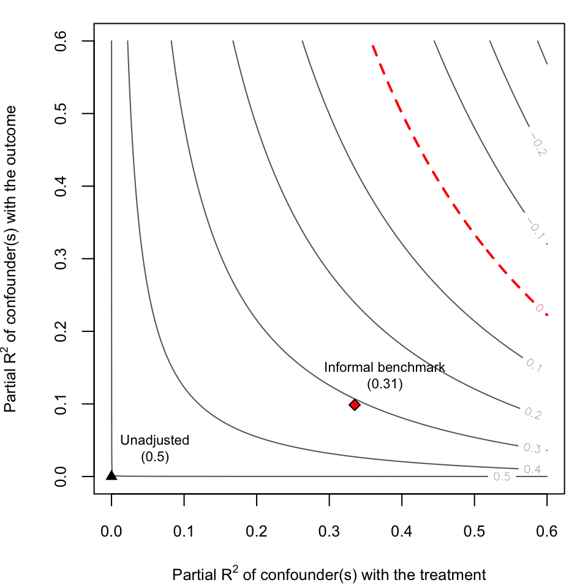
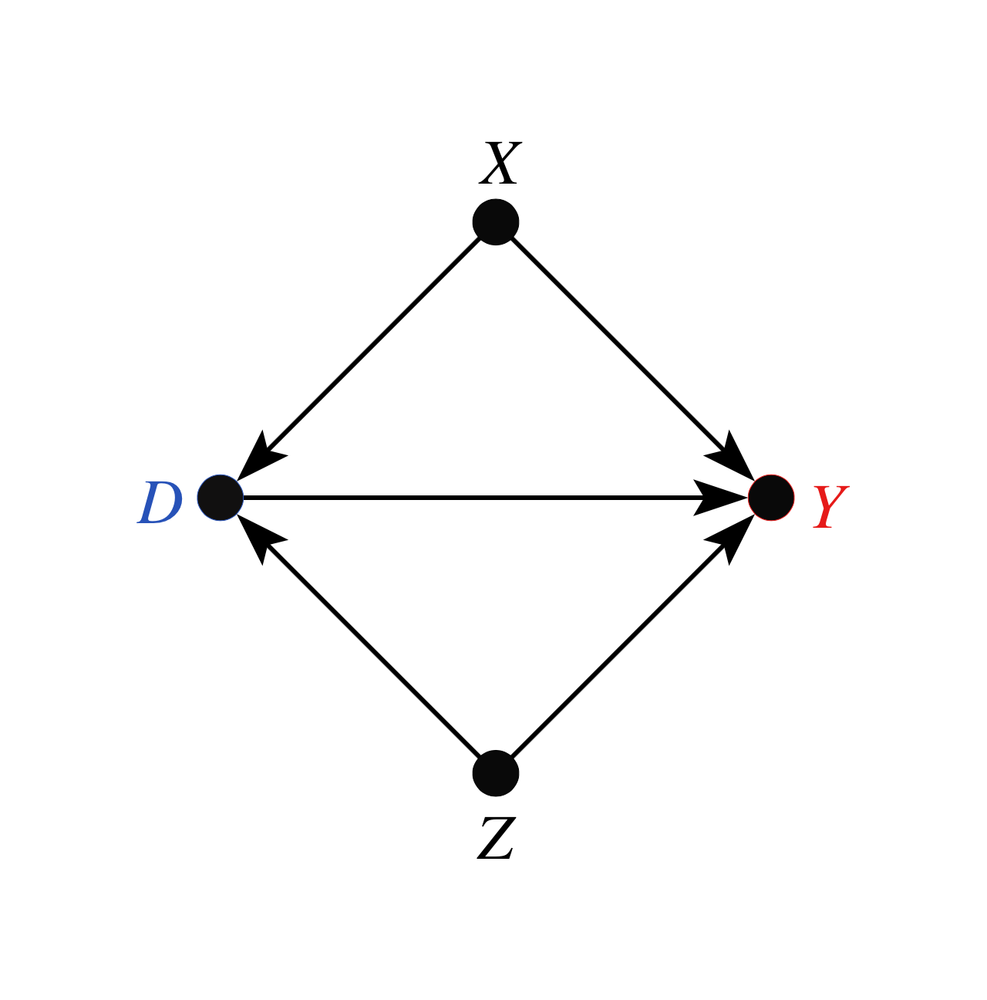
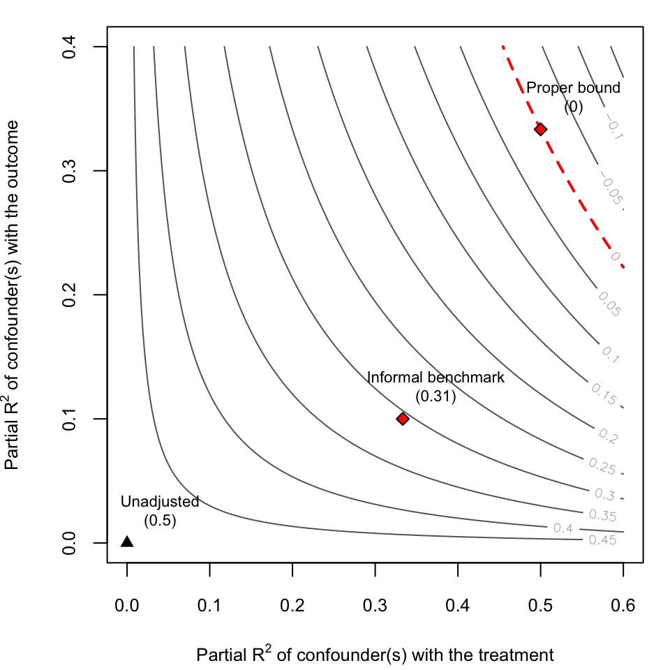

vignettes/informal_benchmarking.Rmd
informal_benchmarking.RmdIn this section, we show how to replicate the example in Section 6.1 of Cinelli and Hazlett (2020) using the R package sensemakr. This example is especially useful to illustrate how users can construct their own sensitivity contour plots with customized bounds, and it also shows the risks of informal benchmarking procedures that are still widespread in the sensitivity analysis literature (e.g., Imbens, 2003; Blackwell, 2013; Hosman et al. 2010, Dorie et al., 2016, Hong et al. 2018).
Section 4.4 of Cinelli and Hazlett (2020) shows how it is possible to bound the maximum strength of confounding given relative judgments on how the strength unobserved variables compares to the strength of observed variables. You can compute those bounds with the sensemakr package using the function ovb_bounds()
Prior work in sensitivity analysis—dating back at least to Imbens (2003), and followed by others (e.g, Hosman et al. 2010, Dorie et al., 2016, Hong et al. 2018)—has also proposed comparing observables with unobservables, but has done so by informally using statistics of observed variables to “calibrate intuitions” about sensitivity parameters concerning the unobserved variable. This practice, however, can have undesirable consequences as we show next.
Let us begin by simulating the data generating process used in our example. Consider a treatment variable \(D\), an outcome variable \(Y\), one observed confounder \(X\), and one unobserved confounder \(Z\). Again, all disturbance variables \(U\) are mutually independent and note that, in reality, the treatment \(D\) has no causal effect on the outcome \(Y\).
\[\begin{align} Z &= U_{z}\\ X &= U_{x}\\ D &= X + Z + U_d\\ Y &= X + Z + U_y \end{align}\]
Also note that, in this model: (i) the unobserved confounder \(Z\) is independent of \(X\); and, (ii) the unobserved confounder \(Z\) is exactly like \(X\) in terms of its strength of association with the treatment and the outcome. The code below creates a sample of size 10,000 of this data generating process.
In this example, the investigator does not observe the confounder \(Z\). Therefore, she is forced to fit the restricted linear model \(Y \sim D + X\), resulting in the following estimated values
model.ydx <- lm(Y ~ D + X)
summary(model.ydx)
#>
#> Call:
#> lm(formula = Y ~ D + X)
#>
#> Residuals:
#> Min 1Q Median 3Q Max
#> -5.2889 -0.8314 0.0017 0.8287 5.2918
#>
#> Coefficients:
#> Estimate Std. Error t value Pr(>|t|)
#> (Intercept) -0.006058 0.003883 -1.56 0.119
#> D 0.501434 0.002745 182.69 <2e-16 ***
#> X 0.497381 0.004755 104.60 <2e-16 ***
#> ---
#> Signif. codes: 0 '***' 0.001 '**' 0.01 '*' 0.05 '.' 0.1 ' ' 1
#>
#> Residual standard error: 1.228 on 99997 degrees of freedom
#> Multiple R-squared: 0.4998, Adjusted R-squared: 0.4998
#> F-statistic: 4.995e+04 on 2 and 99997 DF, p-value: < 2.2e-16Note we obtain a large and statistically significant coefficient estimate of the effect of \(X\) on \(Y\) (\(0.5\)). However, we know that the variable \(Z\) is not observed, and there is the fear that this estimated effect is in fact due to the bias caused by \(Z\). On the other hand, let us suppose the investigator correctly know that: (i) \(Z\) and \(X\) have the same strength of association with \(D\) and \(Y\); and, (ii) \(Z\) is independent of \(X\). Can we leverage this information to undersand how much bias a confounder \(Z\) “not unlike” \(X\) could cause?
Computing the bias due to the omission of \(Z\) requires two sensitivity parameters: its partial \(R^2\) with the treatment \(D\) and its partial \(R^2\) with the outcome \(Y\). How could we go about computing the bias that a confounder \(Z\) “not unlike \(X\)” would cause?
Intuitively, it seems that we could take as reference the observed partial \(R^2\) of \(X\) with \(D\) and \(Y\), and use those as the plausible values for the sensitivity parameters. That’s the essence of many informal benchmarking proposals. So llet us now compute those observed partial \(R^2\) using the partial_r2() function of sensemakr. For the partial \(R^2\) of \(X\) with the treatment, we also need to fit a treatment regression \(D \sim X\) first.
# loads sensemakr package
library(sensemakr)
#> See details in:
#> Carlos Cinelli and Chad Hazlett (2020). Making Sense of Sensitivity: Extending Omitted Variable Bias. Journal of the Royal Statistical Society, Series B (Statistical Methodology).
# fits treatment regression
model.dx <- lm(D ~ X)
# computes observed partial R2 of X
r2yx.d <- partial_r2(model.ydx, covariates = "X")
r2dx <- partial_r2(model.dx, covariates = "X")Once both partial \(R^2\) are computed, we can determine the implied adjusted estimate due to an unobserved confounder \(Z\) using the adjusted_estimate() function.
informal_adjusted_estimate <- adjusted_estimate(model.ydx,
treatment = "D",
r2dz.x = r2dx,
r2yz.dx = r2yx.d)We can now plot the sensitivity contours with ovb_contour_plot() and add our informal benchmark with the numeric method of add_bound_to_contour(). The arguments label.bump.x and label.bump.y of these functions allow adjusting the position of the bound label in the plot.
# draws sensitivity contours
ovb_contour_plot(model.ydx,
treatment = "D",
lim = .6)
# adds informal benchmark
add_bound_to_contour(r2dz.x = r2dx,
r2yz.dx = r2yx.d,
bound_value = informal_adjusted_estimate,
bound_label = "Informal benchmark")
As we can see, the results of the informal benchmark are different from what we expected. The informal benchmark point is still far away from zero, and this would lead an investigator to incorrectly conclude that an unobserved confounder \(Z\) “not unlike \(X\)” is not sufficient to explain away the observed effect. Moreover, this incorrect conclusion occurs despite correctly assuming that: (i) \(Z\) and \(X\) have the same strength of association with \(D\) and \(Y\); and, (ii) \(Z\) is independent of \(X\). Why does this happen?
As explained in Section 6.1 of Cinelli and Hazlett (2020), there are two problems affecting informal benchmarks in this setting. First, we have to make an adjustment of baseline variance to be explained, since the sensitivity parameters consider the partial \(R^2\) of \(Z\) with the outcome, after taking into account what is already explained by \(X\). Second, consider the DAG of our structural model:

That is, although \(Z\) is marginally independent of \(X\), note that \(Z\) is not conditionally independent of \(X\), given \(D\), because \(D\) is a collider (Pearl, 2009). This distorts the observed quantities of \(X\) that are being used for benchmarking.
Given the above considerations, we do not recomment using informal benchmarks for sensitivity analysis. We now show how to compute formal bounds. In sensemakr, you can use the function ovb_bounds().
# compute formal bounds
formal_bound <- ovb_bounds(model = model.ydx,
treatment = "D",
benchmark_covariates = "X",
kd = 1, ky = 1)In this function you specify the linear model being used (model.ydx), the treatment of interst (\(D\)), the observed variable used for benchmarking (\(X\)), and how stronger \(Z\) is in explaining treatment (kd) and outcome (ky) variation, as compared to the benchmark variable \(X\). We can now plot the proper bound against the informal benchmark.
# contour plot
ovb_contour_plot(model.ydx,
treatment = "D",
lim = .6)
add_bound_to_contour(r2dz.x = r2dx,
r2yz.dx = r2yx.d,
bound_value = informal_adjusted_estimate,
bound_label = "Informal benchmark")
add_bound_to_contour(bounds = formal_bound,
bound_label = "Proper bound")
Note that, using the formal bounds, the researcher now reaches the correct conclusion that, an unobserved confounder \(Z\) similar to \(X\) is strong enough to explain away all the observed association. For further details, please see Sections 4.4 and 6.1 of Cinelli and Hazlett (2020).
Cinelli, C. Hazlett, C. (2020) “Making Sense of Sensitivity: Extending Omitted Variable Bias”. Journal of the Royal Statistical Society, Series B (Statistical Methodology). link.